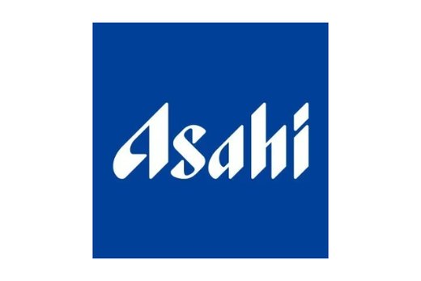
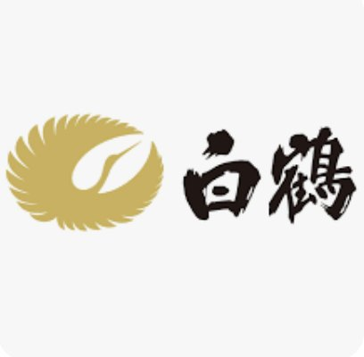
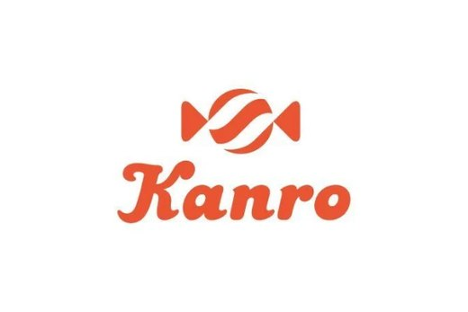
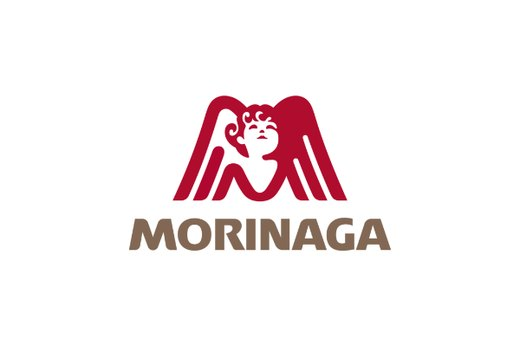
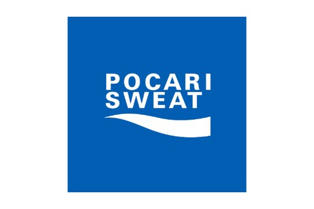
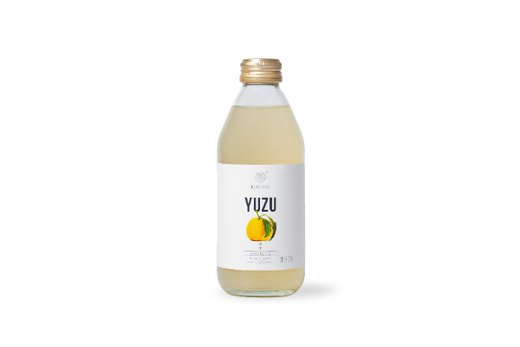
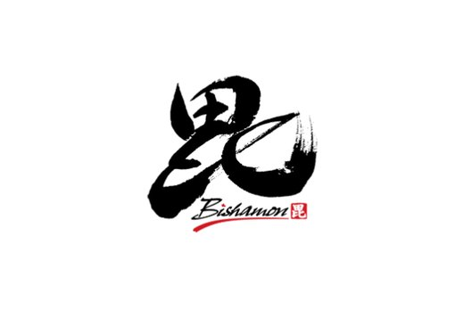
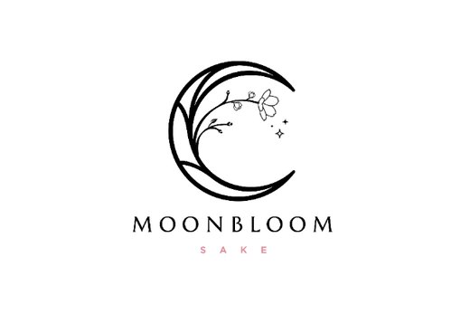
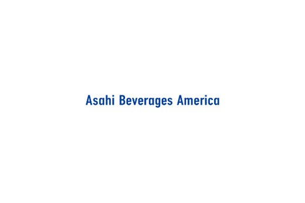

Asahi Beer
Asahi Super Dry's master brewers dared to be different. Taking inspiration from the dry taste of sake, they redefined beer forever. In Tokyo, on 17th March 1987, they created the world's first Super Dry lager, a taste like no other.

A premium sake & cultural experience
日本酒・寿司・日本文化
Sunday, August 30, 2026
Torrance Cultural Arts Center
All ages welcome
The experience
Premium sake, authentic cuisine, a live tuna cutting show, and curated Japanese traditions, all in one afternoon.
プレミアム日本酒
Hundreds of brands from breweries and distilleries in Japan and beyond.
マグロ解体ショー
Whole bluefin, broken down live, served moments later.
特別フード体験
Japanese dishes chosen for this day alone.
日本文化体験
Tradition and craft, up close.
This year's theme
Discover this year's featured theme through artwork, cultural exhibits, and immersive displays inspired by Katsushika Hokusai.
Experience live Sumie performances by Yoshimi Inoue, workshops, and demonstrations by NACA CUE glass artisans from Kyoto.
Workshops on the day
More workshops are being confirmed.
Ticket experience
Kanpai Basic
$65
General admission
Over $100 value
Kanpai Premium
$75
General admission
Over $120 value
Most popular
Kanpai VIP
$95
General admission
Over $150 value
*Prices do not include tax.
Oishii Yokocho
Thirteen kitchens, one afternoon.
Pouring at Sip of Japan
Asahi Super Dry's master brewers dared to be different. Taking inspiration from the dry taste of sake, they redefined beer forever. In Tokyo, on 17th March 1987, they created the world's first Super Dry lager, a taste like no other.
A crisp, light and crushable hybrid style ale originating from Germany that is enjoyable with all kinds of food. We have teamed up with local producer Nova Brewing Co. to produce our own unique style of Kolsch that uses their ginjo grade rice koji used for sake production, which gave our Honda-Ya Kolsch a unique character.
Founded in 1743 in Kobe's Nada district, Hakutsuru Sake Brewery is one of Japan's most iconic sake producers. At Taste of Japan, Hakutsuru shares the history, craftsmanship, and cultural spirit of Japanese sake, connecting tradition with today's global audience.









Sponsorship
Become a partner and reach an audience that cares about Japanese food, culture, and lifestyle. There are three ways to join us.
Supporting Partner
For brands who want to be seen
Gold Partner
For brands who want to be tried
Top tier
Presenting Partner
For the brand that headlines the day
Every partnership is tailored. Reach out and we will walk you through the details.
Talk sponsorship with usThe venue
Torrance, California · Sunday, August 30, 2026